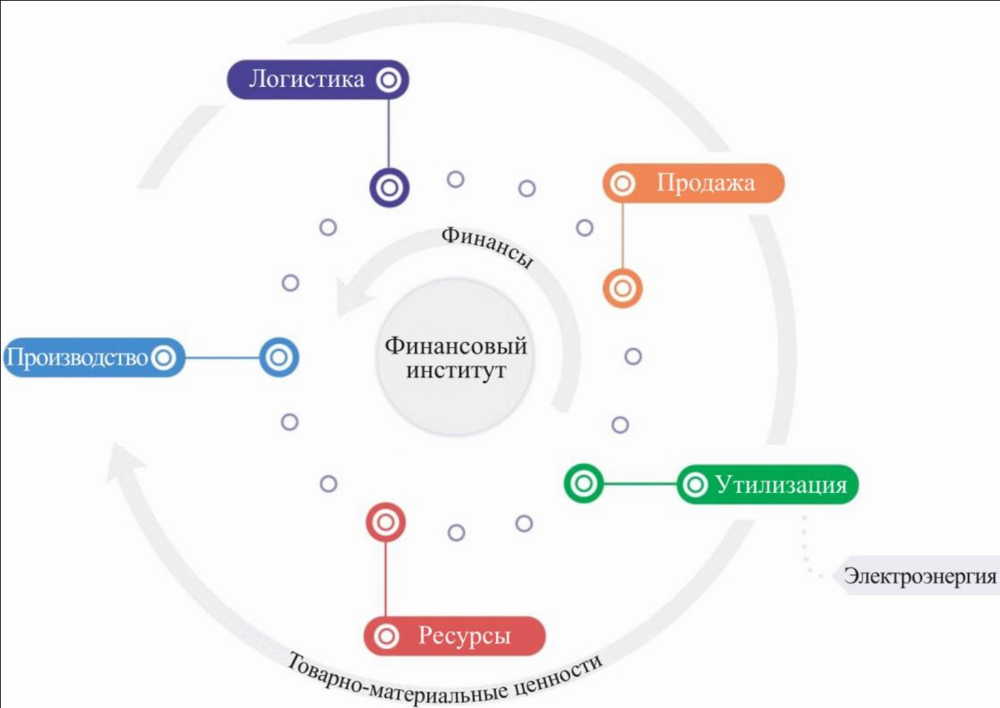
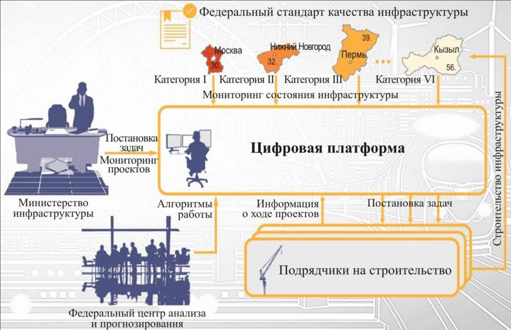

Грибанов Юрий Иванович – канд. экон. наук, профессор кафедры цифрового аутсорсинга АНО ДПО «Академия цифровой экономики» (г. Москва)
Стабильный рост экономики возможен только при грамотном планировании и развитии государственных инфраструктурных проектов. Институциональная среда страны в виде комплекса министерств и ведомств является одним из определяющих факторов конкурентоспособности страны. Однако недостаток современной структурированной системы состоит в недостаточной адаптированности к цифровым изменениям и обновлениям экономики и всей информационной среды. В эпоху цифровизации всех сфер экономической деятельности одной из стратегических задач является формирование новой идеологии функционирования исполнительной власти и местного самоуправления как деятельности, основой которой является обеспечение реализации прав и свобод граждан, предоставление качественных и своевременных публичных услуг, а также руководство глобальной системой инфраструктуры страны. Преобразование системы государственного управления является неотъемлемой составляющей современных процессов глобализации и информатизации общества. По мнению автора, система государственного управления должна изменить свою парадигму в сторону цифрового управления, что поможет решить сложные задачи консолидации всех инфраструктурных единиц. При этом основной целью такого изменения является полноценное включение государственного управления в модернизированный процесс информатизации. Автором проанализирована сложившаяся ситуация относительно соответствия необходимой государственной структуры новому информационному обществу и распределения полномочий между существующими министерствами государственного управления РФ. На основании проведенной аналитической работы в статье рассматривается и обосновывается необходимость создания нового правительственного ведомства на основании современных требований и вызовов цифровой экономики. Автором выделены перспективные направления развития и создания Министерства инфраструктуры посредством консолидации инфраструктурных единиц государственного управления на базе единой цифровой платформы.
Среди основных тенденций развития общества на современном этапе следует отметить процессы глобализации и информатизации практически всех сфер жизнедеятельности. Особенно важным является улучшение информационного обеспечения в государственном управлении и, в частности, разработка и внедрение научного подхода к нему. Возникает необходимость системного решения проблем, с помощью использования современных методологий, которые полноценно могли бы удовлетворить вызовы цифровой экономики. Актуальность и важность данной проблемы связана с потребностью в повышении эффективности функционирования системы государственного управления путем формирования и совершенствования информационных систем на базе единой цифровой платформы.
Преобразование системы государственного управления является неотъемлемой составляющей современных процессов глобализации и информатизации общества. Вопросам реформирования государственного управления, а также приоритетности развития инфраструктуры на уровне страны посвящен ряд научных трудов таких ученых, как Г.А. Борщевский, К.У. Ви, Е.Б. Ермишина, Т.В. Долгова, А.В. Курочкин, С.С. Цукарь, Е.Ф. Юровских, А.Г. Аникевич, Е.П. Чебан и пр.
Новизна данной работы заключается в разработке базовой концепции создания абсолютно новой структуры государственного управления – Министерства инфраструктуры РФ на базе единой цифровой платформы. Цель создания министерства: консолидация всех инфраструктурных единиц государства в одном министерстве для корректного учета, контроля и соответственно управления ими на базе единой цифровой платформы.
Стабильный рост государства возможен только при грамотном планировании и развитии всех инфраструктурных проектов. Для эффективного управления развитием каждого проекта необходимо стандартизировать все инфраструктурные единицы (склады, сети и телекоммуникации, автодороги, нефтегазопроводы и т.д.).
В настоящее время одной из стратегических задач административного реформирования является формирование новой идеологии функционирования исполнительной власти и местного самоуправления как деятельности, в основу которой возлагается обеспечение реализации прав и свобод граждан, предоставление качественных и своевременных публичных услуг, а также руководство глобальной системой инфраструктуры страны. Следовательно, система государственного управления должна изменить свою парадигму в сторону цифрового управления, которое поможет решить сложные задачи консолидации инфраструктурных единиц. При этом основной целью такого изменения является приближение государственного управления к модернизированному процессу информатизации, который должен происходить путем пробуждения у менеджеров государственного уровня интереса к процессу преобразования структурных единиц в единый активно функционирующий субъект политических, экономических и общественных отношений. Данный субъект в виде Министерства инфраструктуры непременно должен быть наделен как реальными инструментами инициирования проектов, так и возможностью контроля над их реализацией.
Институциональная среда страны в виде комплекса Министерств является одним из определяющих факторов конкурентоспособности страны, но недостаток современной структурированной системы состоит в недостаточной адаптированности к цифровым изменениям и обновлениям экономики и всей информационной среды [1, c. 104].
Различия между функционалом министерств разных стран объясняют многие из основных причин различий в технологии и физическом и человеческом капитале между государствами, что, в свою очередь, объясняет значительную часть межстрановых различий в доходах. На уровне каждой страны эффективность государственного управления отражает важность системных механизмов для повышения производительности элементов инфраструктуры, что свидетельствует о фундаментальной роли министерств, которая заключается в установлении правильных стимулов и снижении неопределенности, с тем, чтобы граждане могли быть уверены в участии в экономической деятельности [2, c. 55].
Ни одно государство не может иметь сильную рыночную экономику без адекватного участия органов государственного управления, которые обеспечивают правовое владение имуществом и ведет учет экономической деятельности, поскольку они являются предпосылками получения кредита, продажи недвижимости и поиска средств правовой защиты для конфликтов в суде. Другая фундаментальная роль государства заключается в обеспечении безопасности своих граждан, что является минимальным требованием для стимулирования экономической деятельности [3, c. 8–9].
Несмотря на то, что две роли государства обеспечивают разумные рамки для формальных ограничений, их осуществление зависит от качества выполнения функций каждого отдельного министерства, которое на данном этапе функционирования современной системы государственного управления невозможно оценить простыми средствами аудита. Помимо этого, повышение роли цифрового подхода к государственному управлению провоцируют информационные процессы в глобальном пространстве.
Развитие информационного общества, основанное на широком использовании информационно-коммуникационных технологий, признано Организацией Объединенных Наций стратегией развития человечества в XXI веке. Мировое сообщество уделяет много внимания проблемам информационного общества. В 2000 году на саммите «Большой восьмерки» была принята Окинавская Хартия глобального информационного сообщества, которая провозгласила доступность информационных технологий одним из основных принципов мирового развития [4].
Информатизация общества в данном контексте имеет большое значение для всех сфер хозяйствования страны. В условиях обширного охвата инновационной составляющей всех функционирующих предприятий и социальных структур проще обновлять и модернизировать систему менеджмента на уровне государства.
Таким образом, обосновывается необходимость создания новой структурной единицы в системе государственного управления, которой будет произведена консолидация функций всех инфраструктурных единиц на базе единой цифровой платформы, что позволит приблизить органы государственного управления к функционированию в рамках инновационно-информационного прогресса.
Наконец, необходимость создания нового института с предоставлением ему права определения и мониторинга качества является безусловной, потому как существования объединенной системы, которая могла бы проводить аудит эффективности, предполагает консолидацию всех структурных единиц государственного управления.
Исследования показывают, что три характеристики институтов определяют их качество.
Первая – отсутствие коррупции и чрезмерного влияния, что в целом понимается как злоупотребление государственной властью для частной выгоды. Вторая детерминанта институционального качества – эффективность в государственном секторе – в свою очередь имеет два аспекта: эффективные административные услуги и стабильную политическую среду [5, c. 87].
Среди основных характеристик, которыми, по мнению автора, должен обладать новый цифровой институт, стоит отметить такие особенности цифровой платформы, функционирующей на федеральном уровне:
Предполагается создать систему, которая на основе цифровой базы данных будет проводить мониторинг состояния структурных элементов инфраструктуры в реальном времени, что позволит не только повысить рациональность ресурсов государственного управления, но и обратить внимание инвесторов на современное состояние структуры без отсылок на ошибочные данные [6, c. 18].
Централизованный анализ и сбор отчетности по большому числу объектов позволяет с большей достоверностью прогнозировать непредвиденные ситуации, проводить стратегическое планирование, принимать правильные и точные решения по устранению разрыва между регионами и отраслями хозяйствования, выявлять предпосылки к возникновению сложной экономической ситуации. И, как следствие, необходимым становится быстрое реагирование на изменения потребностей потребителей, инвесторов и внешнего международного рынка, которое будет обеспечено посредством системы Министерства инфраструктуры.
Безусловно, цифровая платформа, на которой будет функционировать Министерство, должна обладать определенной структурой, совокупностью организационных, правовых норм и методов, инструментов государственного воздействия на объект управления [7, c. 244].
Исходя из вышеизложенного, можно констатировать, что Министерство инфраструктуры, в рамках которого будут консолидированы единицы государственного управления, это механизм формирования и функционирования новых приоритетов и ценностей общества в условиях цифровой экономики, который имеет определенную структуру и задачи, основанные на доступности и достоверности информационного пространства [8, c. 85].
Исследуя вопросы электронного управления в России, можно заметить, что смысл самого понятия в официальных документах или дискуссиях российских ученых чаще определяется как «электронное правительство», а не управление или государственный менеджмент [9].
В данном случае объективным будет обратить внимание на опыт Польши, которая вырвалась вперед в вопросе развития инфраструктуры и систем государственного управления как единого целого [10, с. 87].
В мировой практике электронное управление является своеобразным обобщающим термином нескольких подпонятий, таких как «электронное присутствие», «электронное распространение», «электронное участие», «электронная демократия» и др. И недаром ООН отслеживает развитие электронного управления в той или иной стране именно по этим показателям [2, c. 59]. Однако они являются не просто показателями в данном исследовании, а содержательными формами Министерства инфраструктуры, его конкретными проявлениями.
В настоящей ситуации государственного управления инфраструктурой подход к вопросу создания цифровой платформы является несколько техническим. Суженное понимание основных проблем приводит к тому, что принципы электронной демократии в управлении инфраструктурой на уровне государства сегодня только нарушается.
Проведенный анализ статистических данных относительно состояния инфраструктуры, а также стратегического планирования международных организаций показал следующее:
89–93 трлн долл. [13];
В рамках Министерства инфраструктурная система – это множество взаимодействующих институтов, которые создают целостное образование, обеспечивают общие условия и нормальное функционирование экономической, социальной, экологической и других сфер жизнедеятельности общества, его воссоздание и развитие. Инфраструктурная система, как и любая другая система, характеризуется эмергентностью, ингерентностью, адаптивностью, целеустремленностью, организованностью, целостностью, функциональностью, структурностью, устойчивостью, согласованностью составляющих элементов и др.
Целостный механизм реализации задач цифровой платформой во взаимодействии с финансовым институтом можно представить схематично (рис. 1). Здесь стоит отметить полифункциональность Министерства, которая создается посредством консолидации инфраструктурных единиц. Составляющими цикла непрерывного воспроизводства являются: наиболее эффективное использование ресурсов; производство; процессы логистики, осуществляемые при помощи инновационных электронных систем аналитики; продажа; утилизация и переработка отходных материалов для наиболее рентабельного цикла.
Рис. 1. Механизм действия модернизации функционирования платформы[1]
По мнению автора, большое значение в рамках Министерства инфраструктуры РФ должно уделяться проведению анализа качества государственного управления на всех его уровнях. Здесь можно брать пример с развитых стран, где существуют стандарты качества инфраструктуры и государственного менеджмента.
Так, ненадлежащая инфраструктура, которая не имеет должной системы и стандарта аудита качества, ведет к отсутствию доступа к рынкам, рабочих мест, информации и профессиональной подготовки и становится главным препятствием для ведения бизнеса.
При этом высокоразвитая инфраструктура имеет особое значение для эффективного функционирования экономики, поскольку является важным фактором при определении места ведения экономической деятельности, ее видов или секторов, которые могут развиваться в каждом отдельном случае [6, c. 20].
Высокоразвитая инфраструктура, которая может быть обеспечена посредством умелого и профессионального государственного управления, уменьшает влияние расстояния между регионами, обеспечивает интеграцию национального рынка и низкозатратную связь с рынками других стран и регионов.
Консолидирование инфраструктурных единиц в рамках единой цифровой платформы гарантирует качество и развитие инфраструктуры, влияет на экономический рост, разными способами сокращает расхождение между уровнями доходов населения, способствует борьбе с бедностью.
Инфраструктура – основное условие экономического развития. Она непосредственно не производит товары и услуги, но существенно облегчает производство в первичном, вторичном и третичном секторах экономики путем обеспечения внешней экономии (выгоды) [16]. Общепризнанным является факт, что уровень экономического развития любой страны напрямую зависит от развития инфраструктуры. Развитые страны достигли значительного прогресса в связи с развитием социально-экономической инфраструктуры.
Целостная структура Министерства инфраструктуры может быть представлена консолидированием функций в общем механизме (рис. 2).

Рис. 2. Механизм деятельности структуры Министерства инфраструктуры[2]
На данной схеме стоит пояснить, что передача информации осуществляется на постоянной регулярной основе между исполнительными органами и менеджерами в основе структуры платформы для наиболее эффективной организации процесса строительства производств (или прочих институтов инфраструктуры). В рамках функций самого Министерства – надлежащий контроль, мониторинг за существующими проектами, а также оперативное принятие стратегических и взвешенных решений в отношении внесения изменений в их функционирование или же создание новых инфраструктурных единиц. Ключевым направлением обработки поступивших задач цифровой платформой является их постановка перед исполнителями в том виде, который будет предоставлять возможность исполнителям внести предложения в отношении улучшения. Так будет осуществляться непрерывная и необходимая онлайн-связь на всех уровнях и во всех промежутках времени функционирования инфраструктурных единиц.
Что касается необходимости создания общего уровня развития инфраструктуры для всех регионов РФ, то здесь со стороны автора предложено изначально внести категорийность, которая позволит определить текущее состояние развития инфраструктуры и, следовательно, принять решения со стороны Министерства инфраструктуры относительно надлежащих принятых изменений и оптимизации реализации потенциала региона в конкретном направлении. На данном этапе функционирования общей системы инфраструктурных единиц отсутствие централизованного учета и управления инфраструктурой – одна из главных причин усиливающегося экономического разрыва между регионами. Министерство инфраструктуры способно преодолеть данную проблему посредством профилирования и мониторинга потребностей субъектов РФ, которые позволят централизованно управлять планом развития инфраструктуры и повышения уровня экономического развития регионов [18].
Выводы. Таким образом, инфраструктура является одним из важнейших элементов современного общества. Развитие и администрирование инфраструктуры способствуют экономическому росту и повышению конкурентоспособности и производительности и, таким образом, обеспечивают более активное участие России в глобальной экономике. Это также улучшает территориальную сплоченность, выступает основой повышения качества жизни и социальной интеграции.
Инвестиции в инфраструктуру способствуют экономическому росту. Развитие инфраструктуры также обеспечивает повышение производительности труда, снижение себестоимости способствует диверсификации производственной структуры и созданию новых рабочих мест за счет спроса на товары и услуги.
Доступность и сопутствующие услуги, которые способно обеспечить новое Министерство инфраструктуры, имеют решающее значение для поддержания конкурентоспособности, которая, в свою очередь, определяет постоянство уровня жизни, занятости, уровень заработной платы и финансирования всех сфер государственных услуг.
Следует также учитывать, что создание Министерства инфраструктуры на базе единой цифровой платформы может и должно осуществляться различными способами в зависимости от конкретно имеющихся в стране условий. Однако независимо от таких условий при формировании концепции и стратегии института электронного правительства должны обязательно учитываться интересы всех взаимодействующих сторон.
Создание электронного института с консолидированными полномочиями предполагает также стратегическое планирование, свободу и обеспечение устойчивого потока финансовых ресурсов со стороны руководства страны. Если ограничиться только внедрением инновационных технологий, то вряд ли только так можно повысить эффективность государственного управления.
В государствах, где отвергается сервисная модель взаимодействия с гражданами, технологические инновации не способны изменить менталитет бюрократии, которая не рассматривает гражданина как потребителя услуг правительства или как участника процесса принятия политических решений.
[1] Разработано автором.
[2] Разработано автором.